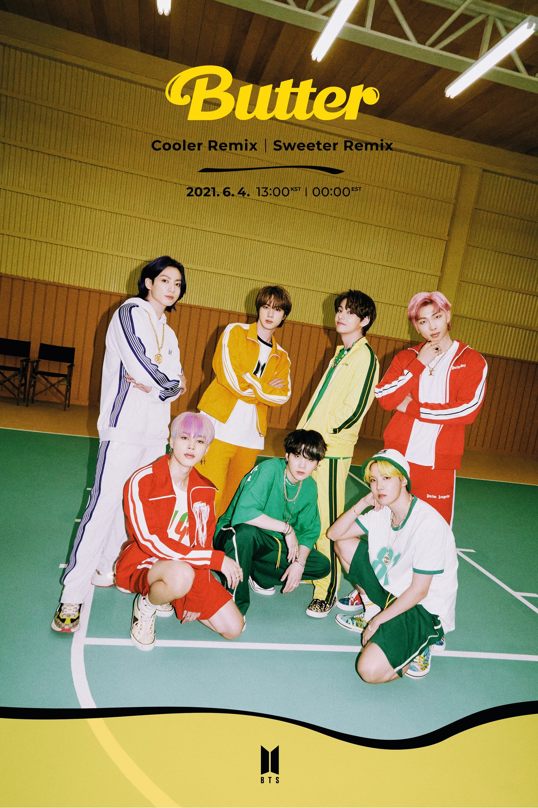

3. Wrecked (By Imagine Dragons)

"Wrecked" was the 27th song that Imagine Dragons released at the begginging of July 2021.
This production is a sorrow memory for Imagine Dragon's sister who died with cancer a year ago.
This is the most touching/heart-breaking song that Imagine Dragons ever released.
This is the 3rd song in the Album: Mercury--Act 1
The 2 other songs are "Follow You" and "Cutthroat", which are also amazing releases.
Mercury---Act 1 (Imagine Dragons):
1. Follow you
2. Cutthroat
3. Wrecked
This production is a sorrow memory for Imagine Dragon's sister who died with cancer a year ago.
This is the most touching/heart-breaking song that Imagine Dragons ever released.
This is the 3rd song in the Album: Mercury--Act 1
The 2 other songs are "Follow You" and "Cutthroat", which are also amazing releases.
Mercury---Act 1 (Imagine Dragons):
1. Follow you
2. Cutthroat
3. Wrecked
4. Butter (By BTS)

"Butter" is the 9th English Song that BTS released on May 21,2021.
Some Rankings/achievements for this song:
***This song achieved 257 Perfect All-Kill (PAK) on Korean charts
***The song also debuted and charted for five weeks at #1 on Billboard Hot 100
***This song is BTS's thrid #1 on Billboard Hot 100
Source
*****Original Version*****
Hotter Remix🥵
Cooler Remix🥶
Sweeter Remix🤩
Some Rankings/achievements for this song:
***This song achieved 257 Perfect All-Kill (PAK) on Korean charts
***The song also debuted and charted for five weeks at #1 on Billboard Hot 100
***This song is BTS's thrid #1 on Billboard Hot 100
Source
*****Original Version*****
Hotter Remix🥵
Cooler Remix🥶
Sweeter Remix🤩